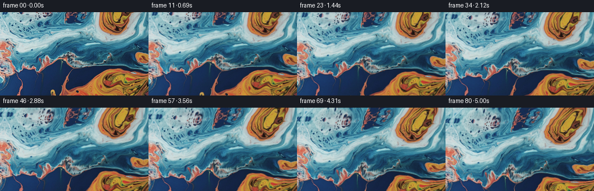
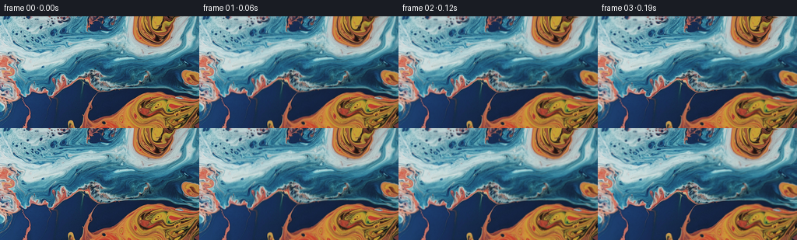

CODING AGENTS AS PIXEL WORLD MODELS
traex/GPT-6.1-Sol · 0003_s1
点击播放 · 原生 RGB 像素
逐轮保存的候选
回放视频、检查图与代码变化。
每份候选均可单独播放。实际图片检查记录在下方工具轨迹中。
候选 01播放与检查图
点击播放 · 原生 RGB 像素


展开代码变化
--- 上一保存版本
+++ 本次保存版本
@@ -0,0 +1,111 @@
+"""Texture-preserving macro-liquid animation, with an upward camera tilt.
+
+No learned components: solve a smooth, incompressible transport field for
+pixel coordinates, then sample the original photographic RGB texture.
+"""
+from pathlib import Path
+import numpy as np
+import cv2
+from PIL import Image
+import artifact_io
+
+HERE = Path(__file__).resolve().parent
+
+
+def velocity(x, y, t):
+ # A stream-function field. Circular cells and travelling shears keep the
+ # liquid coherent, but allow the orange/blue interfaces to slowly curl.
+ vx = np.full_like(x, 0.65)
+ vy = np.full_like(y, -0.28)
+ cells = [(198, 13, 44, .075, 0.3),
+ (198, 127, 56, -.066, 1.5),
+ (68, 45, 57, .050, 3.1),
+ (119, 96, 37, -.065, 4.4),
+ (12, 90, 35, .047, 2.0)]
+ for cx, cy, radius, spin, phase in cells:
+ # Each eddy moves very slightly as larger-scale currents carry it.
+ dx = x - cx - 3.5 * (np.sin(.34*t+phase)-np.sin(phase))
+ dy = y - cy - 2.5 * (np.cos(.29*t+phase)-np.cos(phase))
+ strength = spin * (.88 + .18*np.sin(.52*t+phase))
+ envelope = strength*np.exp(-(dx*dx+dy*dy)/(2*radius*radius))
+ vx -= dy*envelope
+ vy += dx*envelope
+ for kx, ky, amplitude, speed, phase in [
+ (.024, .032, 33.0, .55, .1),
+ (-.035, .018, 26.0, -.43, 1.7),
+ (.057, .045, 9.0, .72, 3.0)]:
+ c = amplitude*np.cos(kx*x+ky*y+speed*t+phase)
+ vx += ky*c
+ vy -= kx*c
+ return vx, vy
+
+
+def sample_texture(image, sx, sy):
+ # Continue the cropped macro surface beyond its upper edge. Slanted,
+ # compressed reflection avoids a repeated straight-edge strip and allows
+ # the camera to reveal a little more of the same orange/blue pools.
+ above = np.maximum(-sy, 0)
+ below = np.maximum(sy-(image.shape[0]-1), 0)
+ sx = sx - .43*above + .20*below + 2.0*np.sin(above/18)*np.sin(sx/41)
+ sy = np.where(sy < 0, .72*above, sy)
+ sy = np.where(sy > image.shape[0]-1, image.shape[0]-1-.80*below, sy)
+ return cv2.remap(image, sx.astype(np.float32), sy.astype(np.float32),
+ interpolation=cv2.INTER_LINEAR,
+ borderMode=cv2.BORDER_REFLECT_101)
+
+
+def generate():
+ cv2.setNumThreads(1)
+ original = np.asarray(Image.open(HERE/'first_frame.png').convert('RGB'))
+ h,w = original.shape[:2]
+ count, fps = 81,16
+ frames = np.empty((count,h,w,3),dtype=np.uint8)
+ frames[0] = original
+ # Semi-Lagrangian coordinate advection: unlike advecting RGB repeatedly,
+ # this retains the source's fine texture all the way through the shot.
+ pad = 88
+ gy,gx = np.mgrid[-pad:h+pad,-pad:w+pad].astype(np.float32)
+ qx,qy = gx.copy(),gy.copy()
+ py,px = np.mgrid[0:h,0:w].astype(np.float32)
+ centerx,centery = (w-1)/2,(h-1)/2
+ dt = 1/fps/2
+ t = 0.
+ for i in range(1,count):
+ for _ in range(2):
+ vx,vy = velocity(gx,gy,t+dt)
+ mx,my = gx-.5*dt*vx,gy-.5*dt*vy
+ vx,vy = velocity(mx,my,t+.5*dt)
+ bx,by = gx-dt*vx+pad,gy-dt*vy+pad
+ qx = cv2.remap(qx,bx,by,cv2.INTER_LINEAR,borderMode=cv2.BORDER_REPLICATE)
+ qy = cv2.remap(qy,bx,by,cv2.INTER_LINEAR,borderMode=cv2.BORDER_REPLICATE)
+ t += dt
+ u=i/(count-1)
+ # Tilt up roughly four degrees, easing only at the ends. Projective
+ # sampling provides the gentle perspective change of a rotating camera.
+ progress = .72*u+.28*(u*u*(3-2*u))
+ angle=.073*progress
+ f=335.
+ c,s=np.cos(angle),np.sin(angle)
+ denom=f*c+(py-centery)*s
+ camera_x=(centerx+(px-centerx)*f/denom).astype(np.float32)
+ camera_y=(centery+f*((py-centery)*c-f*s)/denom).astype(np.float32)
+ sx=cv2.remap(qx,camera_x+pad,camera_y+pad,cv2.INTER_LINEAR,
+ borderMode=cv2.BORDER_REPLICATE)
+ sy=cv2.remap(qy,camera_x+pad,camera_y+pad,cv2.INTER_LINEAR,
+ borderMode=cv2.BORDER_REPLICATE)
+ # Small capillary waves travel through the larger swirls, gently
+ # changing the reflections rather than generating independent speckles.
+ ramp=1-np.exp(-t/1.1)
+ sx += .65*ramp*(np.sin(.096*sx+.074*sy-1.08*t)-np.sin(.096*sx+.074*sy))
+ sy += .52*ramp*(np.sin(-.068*sx+.113*sy+.83*t)-np.sin(-.068*sx+.113*sy))
+ rgb=sample_texture(original,sx,sy).astype(np.float32)
+ # Weak moving illumination on the liquid's reflective surface.
+ light = .009*ramp*(np.sin(.045*sx+.071*sy-.78*t)-np.sin(.045*sx+.071*sy))
+ rgb *= (1+light[...,None])
+ frames[i]=np.clip(np.rint(rgb),0,255).astype(np.uint8)
+ assert np.array_equal(frames[0],original)
+ artifact_io.save(frames,HERE)
+ return frames
+
+if __name__=='__main__':
+ generate()
可观测工具轨迹
实际执行的命令与返回图片。
命令 1exit 0
/bin/bash -lc 'ls -la; cat prompt.txt; cat GENERATION_RULES.md'
命令 2exit 0
/bin/bash -lc "cat task_spec.json; cat artifact_io.py; python - <<'PY'
from PIL import Image
import numpy as np
im=np.array(Image.open('first_frame.png').convert('RGB')); print(im.shape)
print('min,max,mean',im.min(axis=(0,1)),im.max(axis=(0,1)),im.mean(axis=(0,1)))
small=np.array(Image.fromarray(im).resize((64,36)))
# represent hues color/light levels
for row in small:
s=''
for r,g,b in row.astype(float):
mx=max(r,g,b);mn=min(r,g,b)
if mx<25: c=' '
elif mx-mn<25:c='.' if mx<90 else 'o' if mx<180 else 'W'
elif b>r*1.25:c='B' if b>100 else 'b'
elif r>b*1.4:c='O' if g>r*.32 else 'R'
elif g>r*1.2 and g>b*1.1:c='G'
else:c='p' if b>g*1.3 else 'c'
s+=c
print(s)
PY"命令 3exit 0
/bin/bash -lc "python - <<'PY'
import importlib.util
for p in ['numpy','scipy','cv2','PIL']:
print(p,bool(importlib.util.find_spec(p)))
from PIL import Image
import numpy as np
im=np.array(Image.open('first_frame.png')).astype(float)
for y in range(0,144,8):
print(y, ' '.join('%3d,%3d,%3d'%tuple(im[y:y+8,x:x+8].mean((0,1))) for x in range(0,256,16)))
PY"命令 4exit 1
/bin/bash -lc "cat > generate.py <<'PY'
\"\"\"Texture-preserving macro-liquid animation, with an upward camera tilt.
No learned components: solve a smooth, incompressible transport field for
pixel coordinates, then sample the original photographic RGB texture.
\"\"\"
from pathlib import Path
import numpy as np
import cv2
from PIL import Image
import artifact_io
HERE = Path(__file__).resolve().parent
def velocity(x, y, t):
# A stream-function field. Circular cells and travelling shears keep the
# liquid coherent, but allow the orange/blue interfaces to slowly curl.
vx = np.full_like(x, 0.65)
vy = np.full_like(y, -0.28)
cells = [(198, 13, 44, .075, 0.3),
(198, 127, 56, -.066, 1.5),
(68, 45, 57, .050, 3.1),
(119, 96, 37, -.065, 4.4),
(12, 90, 35, .047, 2.0)]
for cx, cy, radius, spin, phase in cells:
# Each eddy moves very slightly as larger-scale currents carry it.
dx = x - cx - 3.5 * (np.sin(.34*t+phase)-np.sin(phase))
dy = y - cy - 2.5 * (np.cos(.29*t+phase)-np.cos(phase))
strength = spin * (.88 + .18*np.sin(.52*t+phase))
envelope = strength*np.exp(-(dx*dx+dy*dy)/(2*radius*radius))
vx -= dy*envelope
vy += dx*envelope
for kx, ky, amplitude, speed, phase in [
(.024, .032, 33.0, .55, .1),
(-.035, .018, 26.0, -.43, 1.7),
(.057, .045, 9.0, .72, 3.0)]:
c = amplitude*np.cos(kx*x+ky*y+speed*t+phase)
vx += ky*c
vy -= kx*c
return vx, vy
def sample_texture(image, sx, sy):
# Continue the cropped macro surface beyond its upper edge. Slanted,
# compressed reflection avoids a repeated straight-edge strip and allows
# the camera to reveal a little more of the same orange/blue pools.
above = np.maximum(-sy, 0)
below = np.maximum(sy-(image.shape[0]-1), 0)
sx = sx - .43*above + .20*below + 2.0*np.sin(above/18)*np.sin(sx/41)
sy = np.where(sy < 0, .72*above, sy)
sy = np.where(sy > image.shape[0]-1, image.shape[0]-1-.80*below, sy)
return cv2.remap(image, sx.astype(np.float32), sy.astype(np.float32),
interpolation=cv2.INTER_LINEAR,
borderMode=cv2.BORDER_REFLECT_101)
def generate():
cv2.setNumThreads(1)
original = np.asarray(Image.open(HERE/'first_frame.png').convert('RGB'))
h,w = original.shape[:2]
count, fps = 81,16
frames = np.empty((count,h,w,3),dtype=np.uint8)
frames[0] = original
# Semi-Lagrangian coordinate advection: unlike advecting RGB repeatedly,
# this retains the source's fine texture all the way through the shot.
pad = 88
gy,gx = np.mgrid[-pad:h+pad,-pad:w+pad].astype(np.float32)
qx,qy = gx.copy(),gy.copy()
py,px = np.mgrid[0:h,0:w].astype(np.float32)
centerx,centery = (w-1)/2,(h-1)/2
dt = 1/fps/2
t = 0.
for i in range(1,count):
for _ in range(2):
vx,vy = velocity(gx,gy,t+dt)
mx,my = gx-.5*dt*vx,gy-.5*dt*vy
vx,vy = velocity(mx,my,t+.5*dt)
bx,by = gx-dt*vx+pad,gy-dt*vy+pad
qx = cv2.remap(qx,bx,by,cv2.INTER_LINEAR,borderMode=cv2.BORDER_REPLICATE)
qy = cv2.remap(qy,bx,by,cv2.INTER_LINEAR,borderMode=cv2.BORDER_REPLICATE)
t += dt
u=i/(count-1)
# Tilt up roughly four degrees, easing only at the ends. Projective
# sampling provides the gentle perspective change of a rotating camera.
progress = .72*u+.28*(u*u*(3-2*u))
angle=.073*progress
f=335.
c,s=np.cos(angle),np.sin(angle)
denom=f*c+(py-centery)*s
camera_x=centerx+(px-centerx)*f/denom
camera_y=centery+f*((py-centery)*c-f*s)/denom
sx=cv2.remap(qx,camera_x+pad,camera_y+pad,cv2.INTER_LINEAR,
borderMode=cv2.BORDER_REPLICATE)
sy=cv2.remap(qy,camera_x+pad,camera_y+pad,cv2.INTER_LINEAR,
borderMode=cv2.BORDER_REPLICATE)
# Small capillary waves travel through the larger swirls, gently
# changing the reflections rather than generating independent speckles.
ramp=1-np.exp(-t/1.1)
sx += .65*ramp*(np.sin(.096*sx+.074*sy-1.08*t)-np.sin(.096*sx+.074*sy))
sy += .52*ramp*(np.sin(-.068*sx+.113*sy+.83*t)-np.sin(-.068*sx+.113*sy))
rgb=sample_texture(original,sx,sy).astype(np.float32)
# Weak moving illumination on the liquid's reflective surface.
light = .009*ramp*(np.sin(.045*sx+.071*sy-.78*t)-np.sin(.045*sx+.071*sy))
rgb *= (1+light[...,None])
frames[i]=np.clip(np.rint(rgb),0,255).astype(np.uint8)
assert np.array_equal(frames[0],original)
artifact_io.save(frames,HERE)
return frames
if __name__=='__main__':
generate()
PY
python generate.py
python - <<'PY'
import numpy as np
from PIL import Image
p=np.load('pixels.npz')['pixels']; f=np.stack([(p>>16)&255,(p>>8)&255,p&255],axis=-1).transpose(2,0,1,3).astype('uint8')
print('shape',f.shape,'first frame identical',np.array_equal(f[0],np.array(Image.open('first_frame.png').convert('RGB'))))
d=np.abs(np.diff(f.astype(float),axis=0)); print('adjacent mean differences min/mean/max',d.mean((1,2,3)).min(),d.mean(),d.mean((1,2,3)).max());print('last vs first',np.abs(f[-1].astype(float)-f[0]).mean())
PY"命令 5exit 0
/bin/bash -lc "python generate.py
python - <<'PY'
import numpy as np
from PIL import Image
p=np.load('pixels.npz')['pixels']; f=np.stack([(p>>16)&255,(p>>8)&255,p&255],axis=-1).transpose(2,0,1,3).astype('uint8')
print('shape',f.shape,'first frame identical',np.array_equal(f[0],np.array(Image.open('first_frame.png').convert('RGB'))))
d=np.abs(np.diff(f.astype(float),axis=0)); print('adjacent mean differences min/mean/max',d.mean((1,2,3)).min(),d.mean(),d.mean((1,2,3)).max());print('last vs first',np.abs(f[-1].astype(float)-f[0]).mean())
for i in [0,20,40,60,80]:
im=f[i].astype(float)
orange=(im[:,:,0]>1.4*im[:,:,2])&(im[:,:,0]>95)
blue=(im[:,:,2]>1.25*im[:,:,0])&(im[:,:,2]>65)
print(i,'color area orange/blue',orange.mean(),blue.mean(),'mean',im.mean((0,1)),'detail',np.abs(np.diff(im,axis=1)).mean())
PY"命令 6exit 2
/bin/bash -lc 'if command -v ffmpeg >/dev/null 2>&1; then ffmpeg -hide_banner -loglevel error -y -framerate 16 -i frames/%02d.png -frames:v 81 -c:v libx264 -preset slow -crf 17 -pix_fmt yuv420p -movflags +faststart video.mp4; fi ls -lh video.mp4 pixels.npz index.html generate.py'
命令 7exit 0
/bin/bash -lc "python - <<'PY' import importlib.util for n in ['imageio','imageio_ffmpeg','av']: print(n, bool(importlib.util.find_spec(n))) PY"
命令 8exit 0
/bin/bash -lc "python - <<'PY'
import av
from PIL import Image
with av.open('video.mp4','w') as container:
stream=container.add_stream('libx264',rate=16)
stream.width=256;stream.height=144;stream.pix_fmt='yuv420p';stream.options={'crf':'17','preset':'slow'}
for i in range(81):
image=Image.open('frames/%02d.png'%i).convert('RGB')
frame=av.VideoFrame.from_image(image)
for packet in stream.encode(frame):container.mux(packet)
for packet in stream.encode():container.mux(packet)
with av.open('video.mp4') as container:
print('MP4 decoded frames:',sum(1 for _ in container.decode(video=0)))
PY
ls -lh video.mp4"保存候选 1 份；完成命令 8 次；可验证图片返回 0 张。原始 API 响应与完整日志保留在本地。